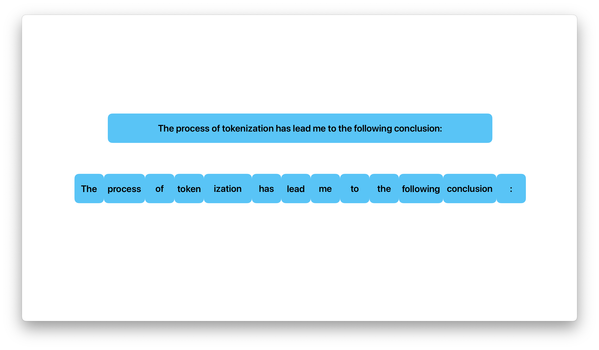

"I'm really excited doing this, you know?".split()["I'm", 'really', 'excited', 'doing', 'this,', 'you', 'know?']This limited time DLC post costs only 499 tokens to unlock.
This notebook follows the fastai style guide.

Tokenization is the process whereby text is given a numerical representation. Sentences are split into components known as tokens. These tokens represent numerical values that language models can work with.
There are various approaches to tokenization. Examples include:
Language models require the use of their own tokenization technique to properly work. Let’s have a look at three approaches.
The word-based approach, well, splits sentences into individual words. In some cases, it also splits on punctuation.
In the example below, the sentence is tokenized into its words using whitespace.
"I'm really excited doing this, you know?".split()["I'm", 'really', 'excited', 'doing', 'this,', 'you', 'know?']Let’s see it split based on its punctuation.
import re
seq = "I'm really excited doing this, you know?"
toks = re.findall(r'\w+|[^\w\s]+', seq); toks['I', "'", 'm', 'really', 'excited', 'doing', 'this', ',', 'you', 'know', '?']After tokenizing, an ID is assigned to each word, or token, so the model can identify them.
The issue with the word-based approach is wend up with huge vocabularies1, especially when splitting on punctuation. For instance, the English language has over 500,000 words, so we would also need more than 500,000 tokens.
1 A vocabulary is a collection of tokens.
2 Examples of such tokens include [UNK] or <unk>.
To remedy this, we could use only the \(x\) most frequently used words However, the issue that arises here is when the tokenizer encounters a word not present in its vocabulary. In this situation, a token representing the concept of “unknown” would be assigned2. When there are many such tokens, the model has no way of “knowing” that these tokens in fact represent different words.
Another issue with this approach is that the tokenizer will assign words such as “car” and “cars” different tokens. The model will not know that these two words are actually similar and represent almost the same concept.
This approach splits text into characters, resulting in a much, much smaller vocabulary – the English alphabet only has 26 letters, as opposed to hundreds of thousands of words. It also results in fewer unknown tokens as words are comprised from everything within the vocabulary.
list("Who doesn't love tokenization!")['W',
'h',
'o',
' ',
'd',
'o',
'e',
's',
'n',
"'",
't',
' ',
'l',
'o',
'v',
'e',
' ',
't',
'o',
'k',
'e',
'n',
'i',
'z',
'a',
't',
'i',
'o',
'n',
'!']However, this approach also has its drawbacks. Individual characters hold less meaning than a whole word. For example, ‘t’ holds less meaning than ‘tokenization’.
That said, this issue is not as prevalent in other languages. In Chinese languages, each character is also a word. Therefore, characters in Chinese languages hold less meaning than characters in Latin languages.
While there will be an overall smaller vocabulary, there will still be much processing to do – we end up with a large amount of individual tokens to process. ‘Hello!’ would need only a single token, where as ‘H’, ‘e’, ‘l’, ‘l’, ‘o’, and ‘!’ would require six tokens.
This approach is a combination of the two approaches above, and is also the approach most state-of-the-art tokenizers use today.
With subword-based tokenizers, words fall into two categories: frequent words and rare words. Frequent words are not to be split, but rare words are to be split into meaningful subwords.

For example, ‘tokenization’ would be categorized as a rare word and would be tokenized into the tokens ‘token’ and ‘ization’. Though one word is now represented by two tokens, as opposed to a single token with the word-based approach, it is split into two components that much more frequently appear. We also don’t need eleven tokens, as would be with the character-based approach. On top of that, the model would learn the grammatical function of ‘ization’.
This is all while giving the model the ability to learn the meaning of ‘realization’ as the two tokens that comprise the word appear next to each other
This approach allows us to have relatively good covereage for a language while having relatively smaller vocabularies. It also results in minimal unknown tokens.
If we draw parallels between a tokenizer and a model, the algorithm of a tokenizer is akin to the architecture of a model. On a similar note, the vocabulary of a tokenizer is akin to the weights of a model.
Let’s load in the tokenizer used for the BERT base model (cased).
! pip install -Uqq transformers1import logging; logging.disable(logging.WARNING)
from transformers import AutoTokenizer
tokz = AutoTokenizer.from_pretrained('bert-base-cased')We can use the loaded tokenizer to directly tokenize our desired sequence.
seq = "The process of tokenization has lead me to the appalling conclusion: life isn't what it is."
tokz(seq){'input_ids': [101, 1109, 1965, 1104, 22559, 2734, 1144, 1730, 1143, 1106, 1103, 12647, 5727, 1158, 6593, 131, 1297, 2762, 112, 189, 1184, 1122, 1110, 119, 102], 'token_type_ids': [0, 0, 0, 0, 0, 0, 0, 0, 0, 0, 0, 0, 0, 0, 0, 0, 0, 0, 0, 0, 0, 0, 0, 0, 0], 'attention_mask': [1, 1, 1, 1, 1, 1, 1, 1, 1, 1, 1, 1, 1, 1, 1, 1, 1, 1, 1, 1, 1, 1, 1, 1, 1]}However, let’s look behind the scenes to see what’s happening. We’ll only focus on how input_ids came to be.
Encoding is the name given to the process whereby text is mapped to numbers. Text is first tokenized, after which, the tokens are mapped to their respective IDs.
toks = tokz.tokenize(seq); toks['The',
'process',
'of',
'token',
'##ization',
'has',
'lead',
'me',
'to',
'the',
'app',
'##all',
'##ing',
'conclusion',
':',
'life',
'isn',
"'",
't',
'what',
'it',
'is',
'.']As we can see, the tokenizer used by the BERT base model (cased) is a subword-based tokenizer. This can be seen by ‘tokenization’ being split into ‘token’ and ‘##ization’, as well as ‘appalling’ being split into ‘app’, ‘##all’, and ‘##ing’.
ids = tokz.convert_tokens_to_ids(toks); ids[1109,
1965,
1104,
22559,
2734,
1144,
1730,
1143,
1106,
1103,
12647,
5727,
1158,
6593,
131,
1297,
2762,
112,
189,
1184,
1122,
1110,
119]The numbers that have been assigned are based on the vocabulary of the tokenizer. These IDs can now be used as input to a model.
Decoding is simply the opposite process: convert a sequence of IDs into their respective tokens, including putting together tokens that were part of the same word.
dec_seq = tokz.decode(ids); dec_seq"The process of tokenization has lead me to the appalling conclusion : life isn't what it is."The decoding algorithm of our tokenzier has introduced a space before the colon. 🤔
Decoding is used for models that generate text: the model outputs a sequence of IDs which are then decoded to their respective tokens.
Tokenization is all about splitting text up and giving the split up text a numerical representation that computers can work with.
If you have any comments, questions, suggestions, feedback, criticisms, or corrections, please do post them down in the comment section below!